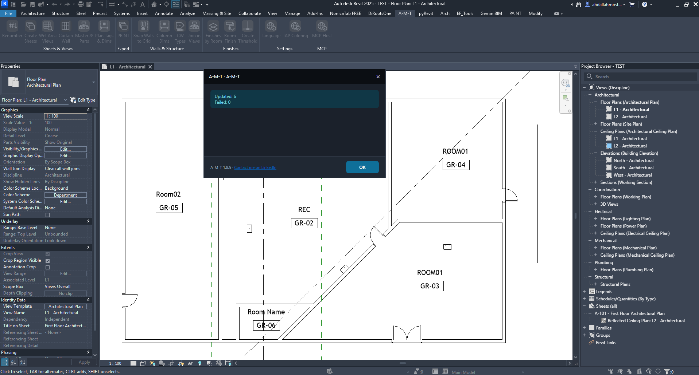
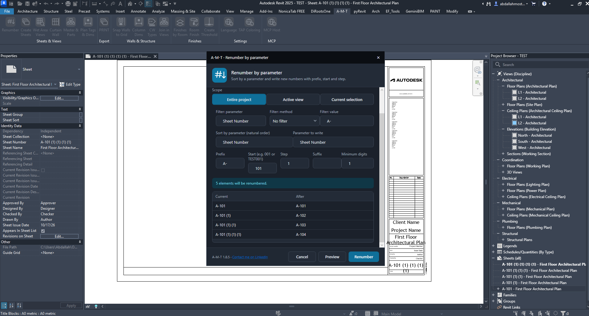
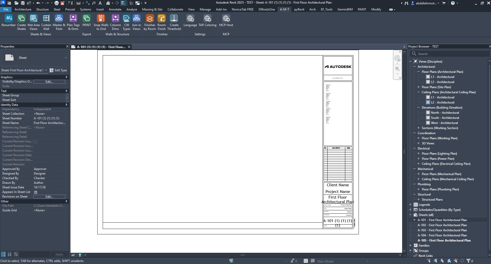

Renumber
Renumber Revit elements and sheets using a consistent sequence. Configure the target scope, choose how items are filtered and sorted, define the numbering format, and preview the result before applying changes.
How the command works
A simple workflow from choosing the target to applying the new sequence.
1. Renumber elements by parameter
Use a parameter to sort elements and write a new sequential value.
Choose the numbering scope
Select where the command should search for elements:
- Entire Project — process matching elements throughout the project.
- Active View — process matching elements visible in the active view.
- Current Selection — process only the elements you selected in Revit.

2. Configure the parameters
Set the source parameter, sorting rule and destination parameter.
Filter Parameter
Select the parameter used to identify or filter the target elements.
Filter Method
Choose the filtering method. The example shown uses No filter.
Filter Value
Enter the value used by the selected filter method, when applicable.
Sort by Parameter
Choose the parameter that determines the natural order of the elements.
Parameter to Write
Choose the parameter that will receive the generated numbering values.
Number Format
Define the prefix, starting value, increment, suffix and minimum digit count.
3. Define the numbering format
Control how each new value is constructed.
Prefix
Text placed before the number, for example GR-.
Start
The first number in the sequence, for example 01.
Step
The increment applied between consecutive values. Example: 1.
Suffix
Optional text placed after the number.
Minimum Digits
Sets the minimum number of digits used for the numeric part.

4. Renumber sheets
The same command can also be used to create a consistent sequence for Revit Sheet Numbers.

Example configuration
| Setting | Example value |
|---|---|
| Scope | Entire Project |
| Filter Parameter | Sheet Number |
| Filter Method | No filter |
| Sort by Parameter | Sheet Number |
| Parameter to Write | Sheet Number |
| Prefix | A- |
| Start | 101 |
| Step | 1 |

5. Preview before applying
Always review the Current and After columns before confirming the operation.
| Current | After |
|---|---|
| A-101 | A-101 |
| A-101 (1) | A-102 |
| A-101 (1) (1) | A-103 |
| A-101 (1) (1) (1) | A-104 |
The table above illustrates the sequence visible in the supplied preview. The actual result depends on the selected scope, sort parameter and numbering settings.
Watch Renumber in Action
See the complete workflow inside Autodesk Revit.
Run the command
- Click Preview to inspect the proposed changes.
- Check that the Current and After values follow the required sequence.
- Click Renumber to apply the new values.
- Review the completion message for Updated and Failed counts.